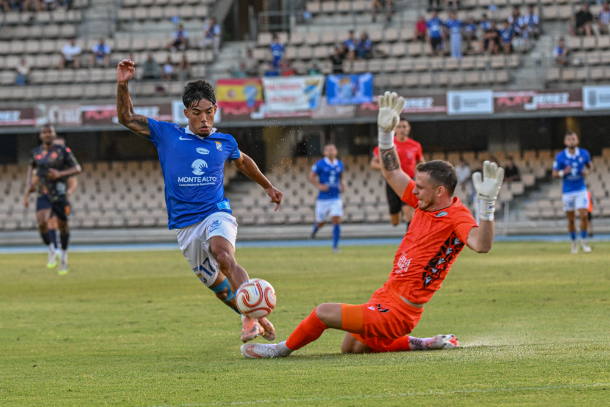
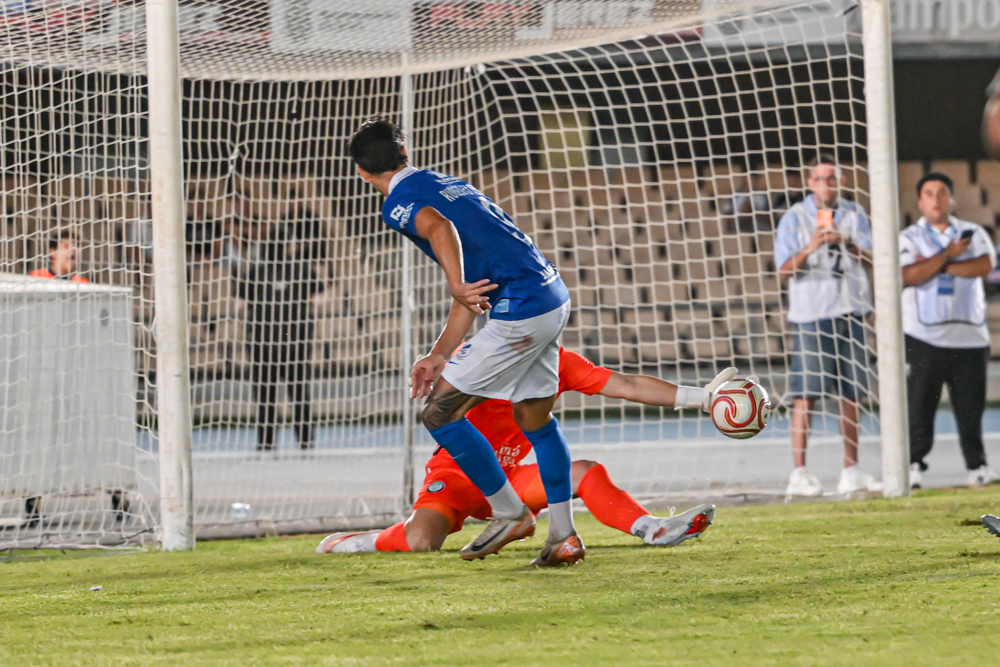

El Xerez gana y convence
 Xerez CD
Xerez CD
Foto: PuroXerecismoChapín acoge el 11º Trofeo Rafa Verdú, con un tanto de Zelu antes del descanso que decide un partido de más sensaciones que de resultado
En pretemporada manda la evolución del equipo por encima del marcador, y en esa clave hay que leer el triunfo del Xerez CD ante el Juventud Torremolinos, conjunto de categoría superior que estrena liga el próximo fin de semana. El 1-0 final, con firma de Zelu, certificó un paso adelante respecto a la imagen mostrada días atrás frente al Real Jaén, con un Jaime Fernández especialmente inspirado y con el añadido de contar entre el público con la presencia del exxerecista Charaf.
Molist empieza a encontrar su equipo
El técnico azulino planteó el partido de inicio con el sistema de tres centrales, la gran novedad táctica de la tarde, recuperando además a Felipe Chacartegui, ya restablecido de sus molestias musculares, para el carril izquierdo. La zaga se formó con Manu Galán, Josete y Moi, quedando Jaime Fernández como carrilero por la derecha, posición desde la que firmó uno de sus mejores partidos de la pretemporada. En el centro del campo, la ausencia de Isma Gutiérrez —que sufrió una distensión sin rotura y es duda para el estreno liguero— abrió hueco a Víctor Isuskiza, que formó pareja con Raúl López; una medular que funcionó con mucho más acierto que en citas anteriores, con muchas menos pérdidas en la salida de balón y una circulación bastante más limpia desde atrás. Jaime López se adelantó posiciones y Zelu apareció más volcado a la izquierda, mientras que arriba repitió Rubén Mesa, que sigue acumulando minutos ante las bajas de Chuma y Saúl Romero.
Entre el público en Chapín estuvo presente el exxerecista Charaf, que siguió de cerca la evolución de un equipo que, con el nuevo dibujo de tres centrales, mostró una imagen bastante más ordenada y solvente que en el amistoso previo ante el Real Jaén.
Un inicio de infarto y un Xerez que fue de menos a más
El partido no había llegado al medio minuto cuando el Torremolinos avisó tras una pérdida propia del Xerez: Pau Pérez asistió a Pinchi en la frontal y solo un buen despeje de Marcos Alconchel, ganando la posición en el uno contra uno, evitó el primer sobresalto.
Con el paso de los minutos, sin embargo, el guion cambió por completo. Isuskiza inició una presión que acabó con un robo dentro del área torremolinense y una ocasión clarísima para Jaime López, que remató con todo a favor y solo topó con la buena respuesta de Javi Cuenca. Poco después, una jugada colectiva bien trenzada entre Isuskiza, Rubén Mesa y Jaime López volvió a obligar al portero visitante a emplearse a fondo. El propio Jaime López, muy participativo, insistió con un remate de cabeza a centro de Chacartegui y con un disparo lejano tras otro robo a Kaptoum. En la otra área, el Torremolinos tuvo su mejor ocasión cuando el camerunés, exjugador del Betis, mandó fuera un balón que tenía todo a favor.
El gol de Zelu antes del descanso
El Xerez fue creciendo con el balón, buscando siempre una salida limpia desde atrás y con Zelu apareciendo constantemente entre líneas, mientras Chacartegui y Jaime Fernández daban profundidad por las bandas. La insistencia tuvo premio en el tramo final de la primera mitad: un balón largo de Manu Galán rompió el fuera de juego para que Zelu se plantara solo dentro del área y definiera con calidad, picando el balón junto al palo derecho de Javi Cuenca. Un gol que reflejaba bien el dominio azulino en ese tramo del partido.

Foto: PuroXerecismoJaime Fernández, un peldaño por encima
Si hay que quedarse con un nombre propio de la tarde en Chapín, ese es el de Jaime Fernández. El carrilero azulino fue uno de los futbolistas más determinantes del choque, aportando profundidad constante por la banda derecha y generando peligro cada vez que encaró a la defensa del Torremolinos. Suya fue una de las jugadas más vistosas de la primera mitad, cuando obligó a Javi Cuenca a emplearse a fondo tras una buena combinación con Isuskiza y Rubén Mesa, y también estuvo cerca del gol con un remate que el meta costasoleño logró desviar. Su desborde y su llegada desde atrás fueron una de las principales referencias ofensivas de un Xerez que, gracias también a su trabajo, encontró con más facilidad los espacios en ataque.
Segunda parte de dominio sin premio añadido
Tras el descanso, el Xerez mantuvo el guion. Alconchel volvió a aparecer decisivo para desactivar un disparo peligroso desde la frontal, y el conjunto de Molist gozó de varias ocasiones para ampliar la ventaja: un remate de Jaime López que no logró controlar tras un pase largo de Josete, un disparo de Javi Mérida que se marchó rozando el palo en la otra área, y nuevas intervenciones de Javi Cuenca ante Rubén Mesa e Isuskiza, que en el rechace tampoco logró batir al meta costasoleño.
Con los cambios ya sobre el terreno de juego en ambos equipos, el partido entró en una recta final de idas y venidas, con el Torremolinos buscando el empate y el Xerez tratando de sentenciar. Una última ocasión de Óscar Lorenzo, que se marchó desviada, pudo haber cerrado el marcador, pero el 1-0 se mantuvo hasta el final.
Buenas sensaciones de cara al arranque liguero
Más allá del resultado, el Xerez CD deja en este trofeo una imagen sólida: mayor orden defensivo con la línea de tres desde el primer minuto, un centro del campo mucho más fino y con muchas menos pérdidas en la salida de balón gracias a Isuskiza y Raúl López, y un Jaime Fernández que, junto a Jaime López y Zelu, se erigió en uno de los futbolistas más destacados y mejor entonados de cara al arranque de la competición oficial.
Ficha técnica
Xerez CD: Marcos Alconchel; Manu Galán (Guille Campos, 70'), Moi, Josete; Chacartegui (Salas, 60'), Raúl López (Ganfornina, 80'), Isuskiza (Fali, 70'), Jaime López (Jaime Peregrina, 70'); Jaime Fernández (Zequi, 70'), Zelu (Óscar Lorenzo, 70') y Rubén Mesa.
Juventud Torremolinos: Javi Cuenca; Mati, Mérida, Climent; Pau Pérez (Andrés, 72'), Dioni (Buch, 60'), Nico Njalla (Lucas, 60'), Kaptoum (Manu Sánchez, 72'); Pinchi (Iwe, 46'), Petersson (Héctor, 60') y Grozdanic.
Gol: 1-0 (44') Zelu.
Árbitro: Alberto Sevillano Marín.
Incidencias: Partido correspondiente al 11º Trofeo Rafa Verdú, disputado en el estadio de Chapín sobre un césped en malas condiciones.
← Volver a la portada